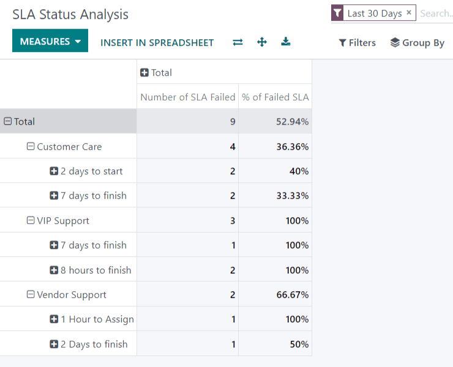

Service Level Agreements (SLA)¶
A Service Level Agreement (SLA) defines the level of service a customer can expect from a supplier. SLAs provide a timeline that tells customers when they can expect results, and keeps the support team on target.
Create a new SLA policy¶
To create a new SLA Policy, navigate to the team’s page under . Select a team, scroll to the Performance section, and then check the selection box next to SLA Policies to enable it for that specific team.

Note
The value indicated next to the Working Hours field is used to determine the deadline for SLA policies. By default, this is determined by the value set in the Company Working Hours field under .
To create a new policy, click the smart button on the team`s settings page or go to , and click New. Start by entering a Title and a Description for the new policy, and proceed to fill out the form using the steps below.
Define the criteria for an SLA policy¶
The Criteria section is used to identify what tickets this policy will be applied to. Fill out the following fields to adjust the selection criteria:
Team: a policy can only be applied to one team. This field is required.
Priority: the priority level for a ticket is identified by selecting the number of stars representing the priority level on the kanban card or the ticket itself. The SLA will only be applied once the priority level has been updated on the ticket to match the SLA criteria. If no selection is made in this field, this policy will only apply to tickets marked as
Low Priority(zero stars).Types: ticket types can be helpful when indicating when a ticket is a customer question, that can be solved with a quick response, or an issue, that may require additional investigation. Multiple ticket types can be selected for this field. If no selection is made, this policy will apply to all ticket types.
Tags: tags are applied to briefly indicate what the ticket is about. Multiple tags can be applied to a single ticket.
Customers: individual contacts or companies may be selected in this field.
Sales Order Items: this field is available only if a team has the Timesheets app enabled. This allows the ticket to tie directly to a specific line on a sales order, which must be indicated on the ticket in the Sales Order Item field.
Note
Unless otherwise indicated, multiple selections can be made for each field. (i.e. multiple Tags can be included in a policy, but only one Priority level)

Establish a target for an SLA policy¶
The Target is the stage a ticket needs to reach, and the time alloted to reach that stage, in order to satisfy the SLA policy. Any stage assigned to a team may be selected for the Reach Stage field. Time spent in stages selected in Excluding Stages will not be included in the calculation of the SLA deadline.
Example
An SLA titled 8 Hours to Close tracks the working time before
a ticket is completed, and would have Solved as the Reach Stage. However, if the
SLA was titled 2 Days to Start, it tracks the working time
before work on a ticket has begun, and would have In Progress as the Reach Stage.
Meeting SLA deadlines¶
Once it is determined that a ticket fits the criteria of an SLA policy, a deadline is calculated. The deadline is based on the creation date of the ticket, and the targeted working hours. The deadline is then added to the ticket, as well as a white tag indicating the name of the SLA applied.

Important
If a ticket fits the criteria for more than one SLA, the earliest occurring deadline will be displayed on the ticket. Once that deadline has passed, the next deadline will be displayed.
Once a ticket satisfies an SLA policy, the SLA tag turns green, and the Deadline field disappears from view on the.

If the SLA deadline passes and the ticket has not moved to the Reach Stage, the SLA tag will turn red. Once the SLA has failed, the red tag will stay on the ticket, even after the ticket is moved to the Reach Stage.

Analyzing SLA performance¶
The SLA Status Analysis report tracks how quickly an SLA is fulfilled, as well as the success rate of individual policies. Navigate to the report and corresponding pivot table by going to .
Using the Pivot view¶
By default, the report is displayed in a Pivot view, and is filtered to show the number of SLAs failed and the failure rate over the last 30 days, grouped by team.
To add the number of SLAs passed or in progress, click the Measures button to reveal a drop-down menu of reporting criteria, and choose from the options available based on the measurements preferred. Whenever a measurement is picked, a check mark will appear in the drop-down menu to indicate that that measurement is included, and a corresponding new column will emerge in the pivot table to show the relevant calculations.
To add a group to a row or column, click the plus :guilabel:` + ` button next to Total, and then select one of the groups. To remove one, click the minus :guilabel:` - ` button and deselect.
Using the Graph view¶
The Status Analysis report can also be viewed as a Bar, Line, or Pie Chart. Toggle between these views by selecting the appropriate icon at the top of the chart.


Tip
Both the Bar Chart and Line Chart can be viewed Stacked. This presents two or more groups to appear on top of each other instead of next to each other, making it easier to compare data.
Using the Cohort view¶
The Cohort view is used to track the changes in data over a period of time. To display the Status Analysis report in a Cohort view, click the icon in the top right corner above the chart.